경북대학교 중앙동아리 돌구름
Bambu Lab P2S · Textured PEI 플레이트 · 뱀부랩 정품 PLA
이 안내를 읽으셨으면 프린터 옆에 있는 확인란에 이름과 날짜를 적고 서명해주세요. 처음 한 번만 하시면 됩니다.
아래 항목 중 일부에는 모델을 어디서 구했는지에 따라 태그가 붙어 있습니다. 자기 경우에 해당하는 것만 읽으시면 됩니다.
P2S는 밀폐형이라 출력 중에 위험할 일은 거의 없습니다. 다만 노즐은 300℃, 베드는 100℃까지 올라가니 출력이 막 끝난 직후에 내부를 만지지는 말아주세요.
PLA도 미세입자와 휘발성 물질이 나옵니다.
시설과와 총동아리연합회에서 동아리방 안전장비 비치 안내를 공지했습니다. 3D 프린터 사용 시 배기장치가 필수이고, 안전장비가 비치되어 있지 않거나 사용하지 않는 것이 확인되면 동아리방 안전관리 기준에 따라 주의 조치를 받을 수 있다고 합니다.
그래서 프린터 옆에 배기팬을 달았습니다. 출력하기 전에 호스를 창밖으로 빼고 창문을 열어주세요.
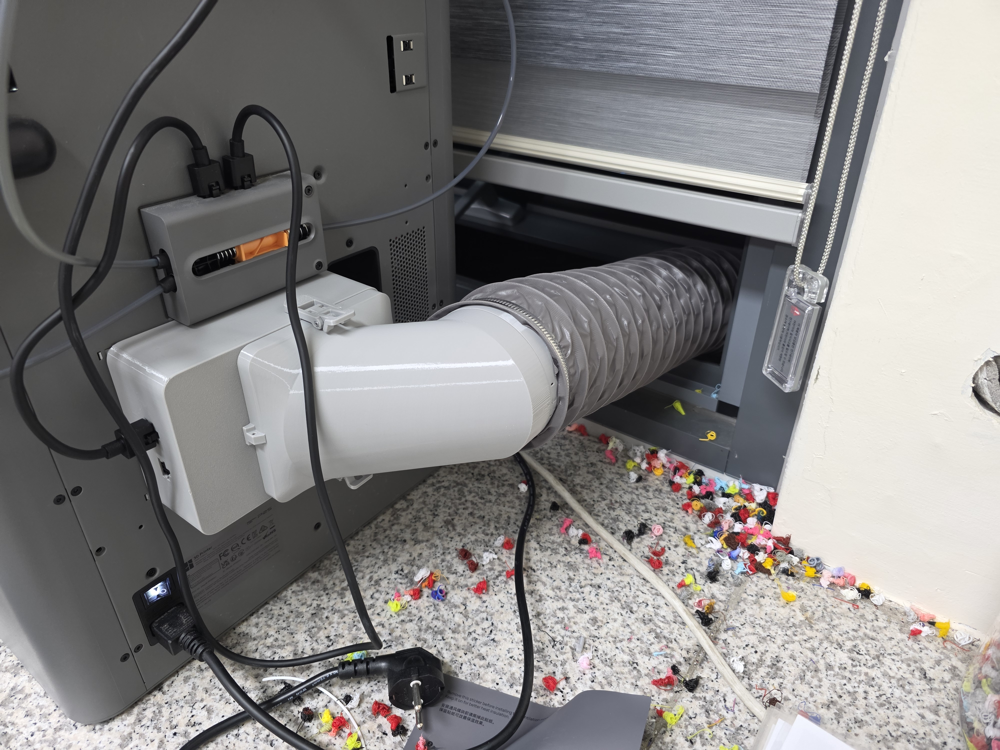
교육부와 과기정통부는 교육기관에서 3D프린터를 운영할 때 안전수칙 게시, 이용자 교육, 사용관리대장 기록을 권고하고 있습니다. 관리자가 이걸 하지 않으면 사고가 났을 때 관리 책임을 피하기 어렵습니다.
그래서 이 문서를 만들었고, 사용 전에 한 번씩 설명을 드립니다. 반복해서 수칙을 어기는 경우에는 사용을 제한합니다. 반대로 말하면, 수칙을 지키지 않아 생긴 사고나 장비 손상은 사용한 사람 책임입니다.
프린터 옆에 놓인 뱀부랩 정품 PLA만 사용합니다. 다른 회사 필라멘트나 PETG 같은 다른 재질은 따로 보관하고 있습니다.
정품만 쓰기로 한 이유가 있습니다. 예전에 스풀 옆면 표기를 확인하지 않고 특수 필라멘트를 일반 PLA로 설정해서 출력한 일이 있었어요.
뱀부랩 정품 필라멘트에는 RFID 태그가 붙어 있습니다. 스풀을 AMS에 꽂으면 프린터가 그 태그를 읽어서 어떤 필라멘트인지 스스로 알아냅니다. 슬라이서에서도 AMS 동기화를 누르면 실제로 꽂혀 있는 게 그대로 들어와서 직접 고를 필요가 없습니다.
PLA와 PETG처럼 재질이 아예 다르면 출력이 막힙니다. 그런데 PLA Basic, Silk, Matte는 전부 타입이 PLA라서 서로 바꿔 설정해도 아무 경고가 안 뜹니다. 그래서 스풀 옆면 표기는 직접 확인하셔야 합니다.
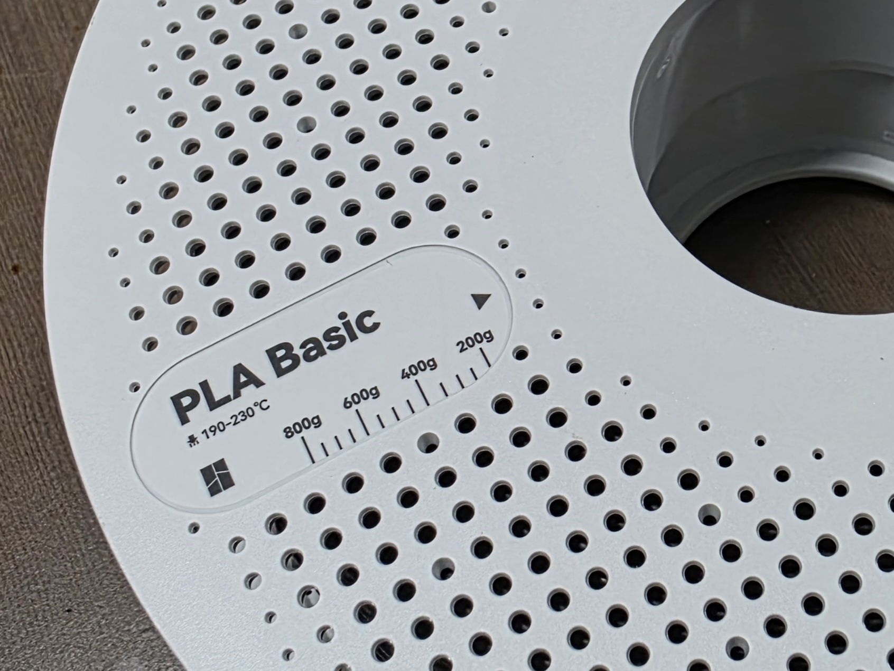
기본 프로파일을 그대로 쓰시면 됩니다. PLA Basic이 아니라면 속도를 올렸을 때 노즐이 막힐 수 있으니 절대 건드리지 말아주세요.
필라멘트는 습기를 먹으면 출력이 지저분해집니다. PLA는 비교적 둔감한 편이라 실내에 그냥 둬도 괜찮습니다.
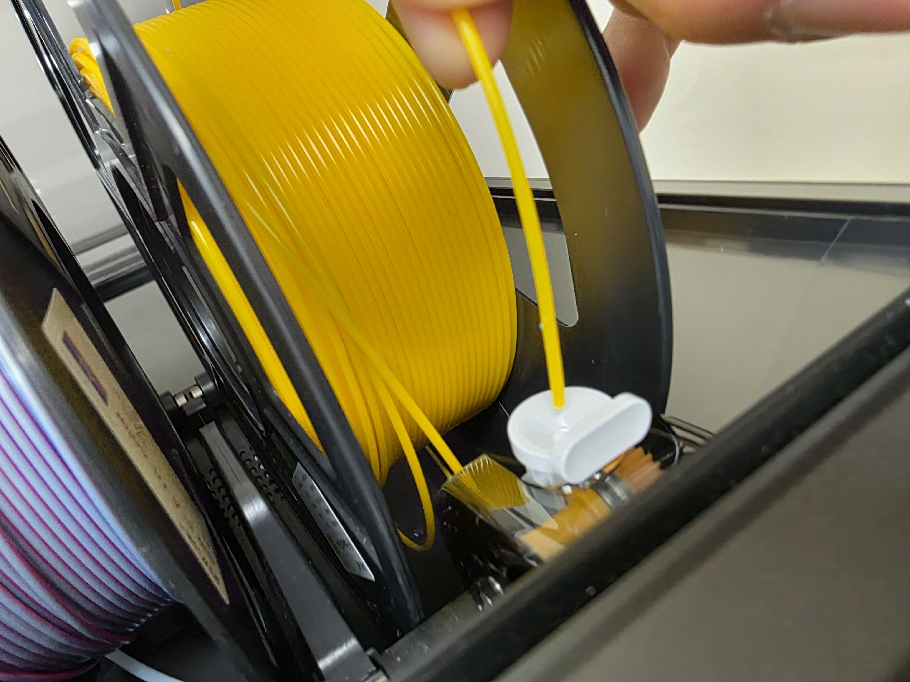
억지로 밀어 넣지 마세요. 교체할 줄 모르겠을 때도 마찬가지입니다. 로드하고 퍼지하고 언로드하기를 반복하다가 한 시간 넘게 출력을 시작조차 못 한 일이 있었어요. 필라멘트만 버려집니다. 물어보시면 몇 분이면 끝나요.
필라멘트가 감긴 플라스틱을 스풀이라고 합니다. 리필만 사면 스풀을 재사용할 수 있고, 스풀이 모자라면 직접 출력해서 만들 수도 있습니다.
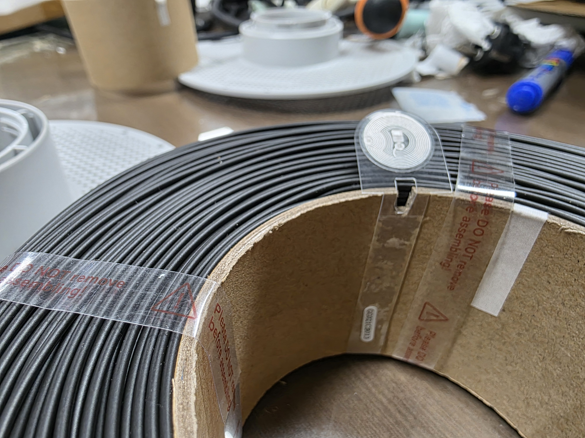
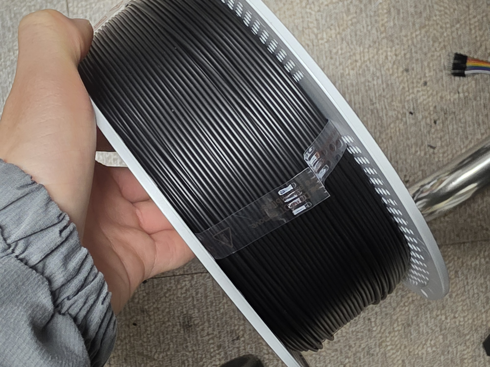
돌구름은 Textured PEI 플레이트만 씁니다. 슬라이서에서도 반드시 Textured PEI로 맞춰주세요. 다른 플레이트로 슬라이싱하면 베드 온도와 노즐 높이가 달라져서 첫 레이어가 제대로 안 붙습니다.
플레이트를 달궈서 필라멘트가 잘 안착되게 합니다. 뒤쪽 홈에 맞추고 앞쪽을 들어 넣으면 자석으로 붙어요. 뺄 때도 앞쪽을 들어 올리시면 됩니다.
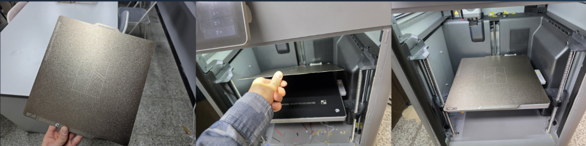
간혹 어긋나게 얹히는 경우가 있으니 장착 상태를 한 번 봐주세요. 그리고 베드와 플레이트 사이에 필라멘트 조각이 끼면 압착되어 자국이 남고 자동 레벨링도 틀어집니다. 플레이트를 올리기 전에 베드 위가 깨끗한지 확인해주세요.
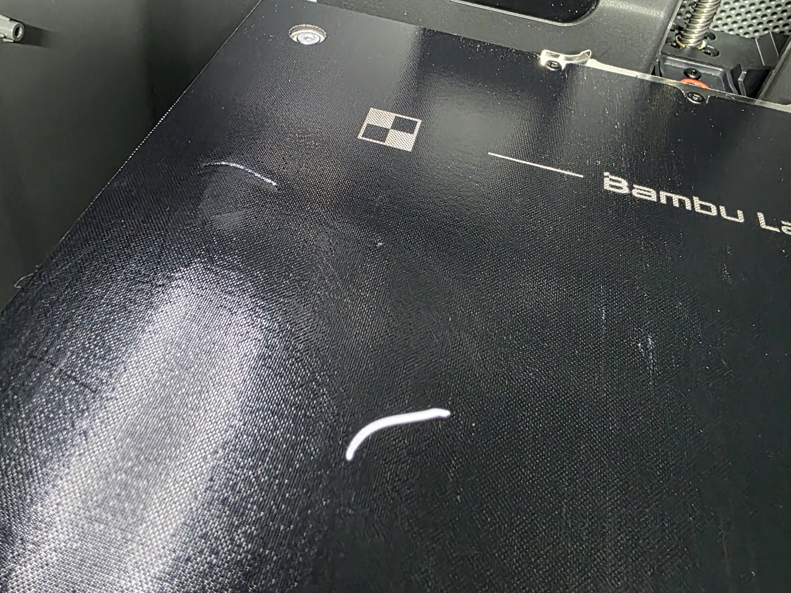
손의 유분이 묻으면 그 자리만 안 붙습니다. 손을 씻고 가장자리 끝만 잡으시면 됩니다.
출력물만 잡고 떨어지면 제일 좋습니다. 안 되면 순서대로 해보세요.
제조사가 권장하는 방법은 주방세제로 세척하는 것입니다. 알코올은 유분을 제거하는 대신 인쇄면에 펴 바르는 결과가 되기도 해서 추천하지 않습니다.
안착이 안 되는 게 오염이 아니라 다른 문제일 수도 있어서, 확인하고 진행하는 게 좋습니다.
내려받기: bambulab.com/en/download/studio
상단에서 P2S / Textured PEI 플레이트 / 0.4 노즐 / 스탠다드로 맞춰주세요.
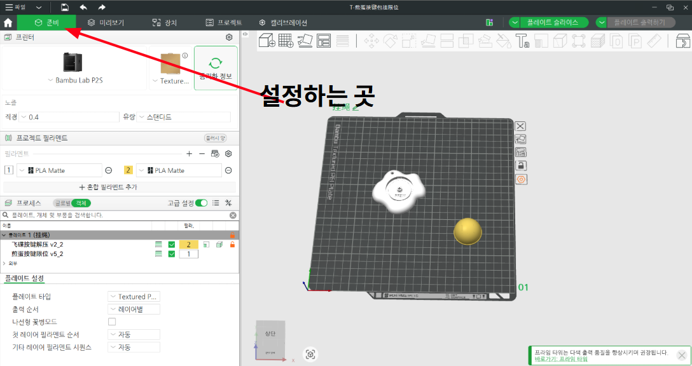
슬라이서에 보이는 필라멘트 색은 화면상 표시일 뿐입니다. 실제 출력 색은 프린터에 어떤 필라멘트가 들어 있는지로 정해집니다.
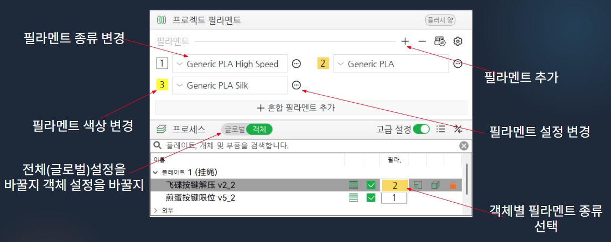
몇 번 해보기 전까지는 기본 프로파일을 그대로 쓰시는 걸 권합니다. 기본값은 대부분의 출력에서 잘 작동하고, 설정을 건드릴수록 실패했을 때 원인을 찾기 어려워집니다.
어느 경로로 받든 뱀부 스튜디오에서 G-code로 만들어야 프린터가 읽을 수 있습니다.
| 형식 | 특징 |
|---|---|
| STL | 가장 흔한 형식입니다. 형상 정보만 있고 색상은 없습니다. |
| 3MF | 색상 정보까지 담을 수 있습니다. 여러 색으로 뽑을 모델이라면 이쪽이 편합니다. |
| OBJ | 색상 정보를 담을 수 있습니다. Tinkercad는 3MF를 지원하지 않아서, 색을 넣은 모델은 OBJ로 내보내야 합니다. 압축(zip) 파일로 받아지니 풀고 나서 뱀부 스튜디오로 불러오면 색상 매핑을 물어봅니다. |
임의로 한 플레이트에 모으지 말아주세요. 색 교체가 폭증하거나 안착에 실패합니다. 간단한 모델은 자유롭게 수정해서 한 플레이트에 여러 개 올려도 괜찮습니다.
허공에는 출력이 안 되니까 튀어나온 부분 아래에 서포트가 생깁니다. 출력 후에 손이나 펜치로 제거하시면 됩니다.
평평한 면이 바닥으로 가도록 방향을 잡으면 서포트가 줄고 표면도 깨끗해집니다. 메이커월드 모델은 이미 방향이 잡혀 있으니 그대로 두시면 돼요.
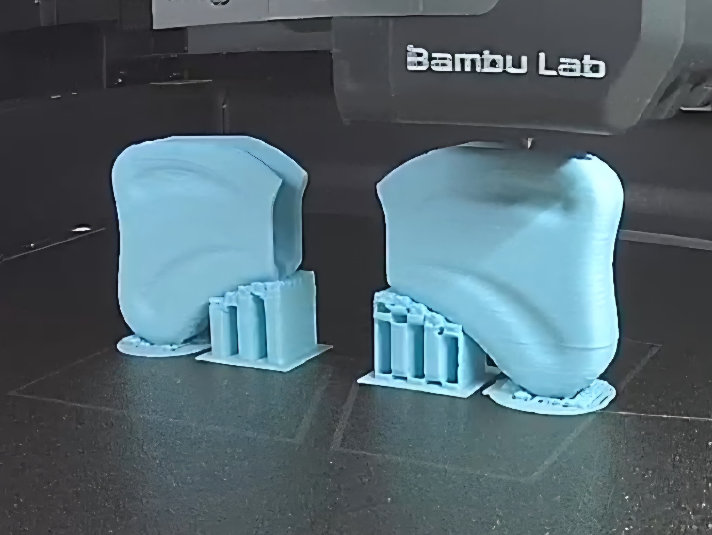
내부 채움 퍼센트, 바깥 벽 수, 바닥·상단 레이어 수, 레이어 두께, 채움 패턴 등 기능이 아주 많습니다. 직접 설계해서 출력할 때는 매우 중요하지만, 메이커월드에서 받은 파일은 이미 설정되어 있어서 손댈 이유가 없습니다.
레이어별로 하면 한 층 쌓을 때마다 필라멘트를 바꿔야 해서 층마다 몇 g씩 버려지고 출력 시간도 엄청나게 늘어납니다. 객체별로 설정하면 1번 객체를 다 뽑고 2번 객체를 뽑습니다. 이때 두 객체는 간격을 벌려서 배치해주세요.
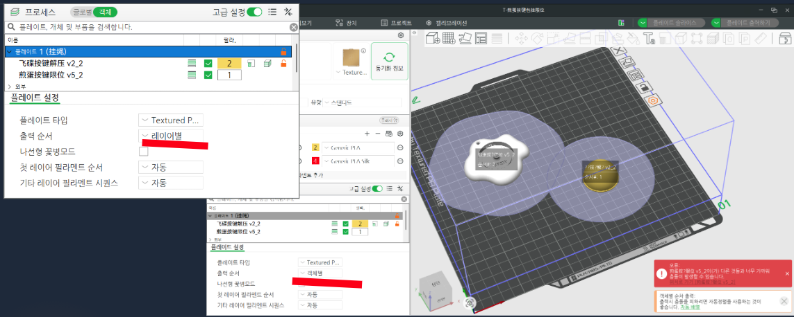
긴 멀티컬러 출력 뒤에 퍼지 배출구가 막혀서 노즐에 필라멘트가 달라붙은 일도 있었습니다. 색 수는 꼭 필요한 만큼만 써주세요.
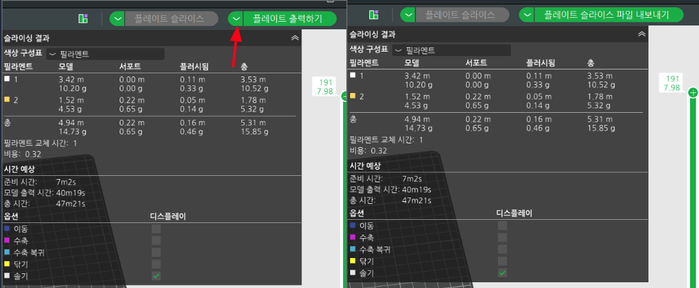
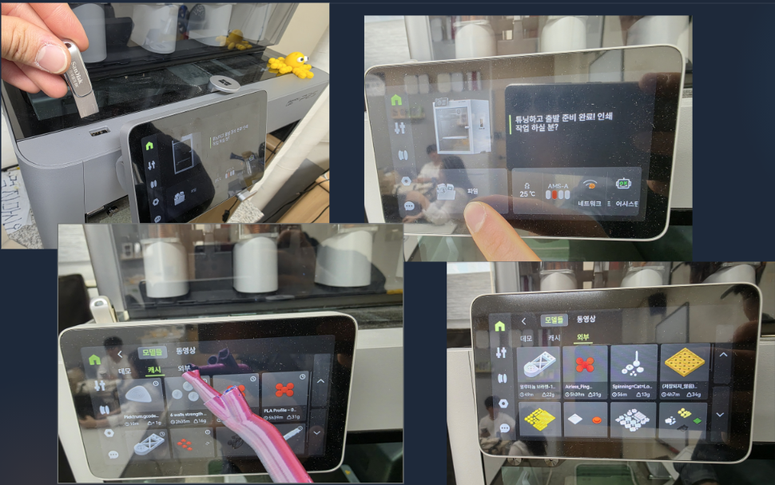
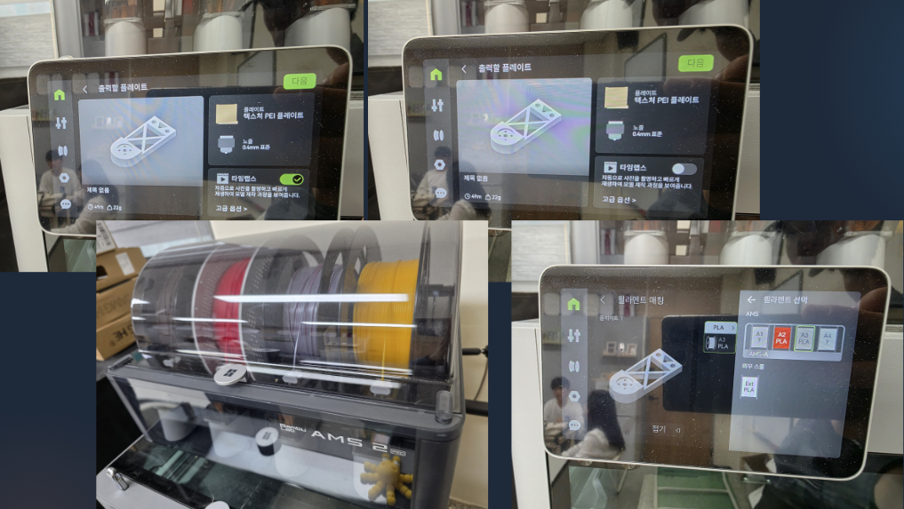
연락주세요.
프린터에는 관리자 뱀부 계정이 로그인되어 있습니다. 경고 알림이랑 원격 확인에 필요해서 로그아웃하거나 다른 계정으로 바꾸면 안 됩니다. 슬라이싱은 각자 자기 계정으로 하시고, 프린터로 보낼 때만 USB를 쓰시면 됩니다.
뭘 뽑는지랑 예상 시간을 한 줄로 적어주시면 됩니다. 프린터가 한 대뿐이라 다른 사람이 헛걸음하지 않게 하려는 거고, 나중에 문제가 생겼을 때 기록이 되기도 합니다. 예상 시간은 슬라이싱하면 나옵니다.
3D프린터 사용 시작합니다. 키링 3개, 약 40분 예상. — 김OO
지금 프린터가 돌아가고 있는지 궁금하면 카톡 주세요. 원격으로 확인해서 알려드리겠습니다.
10~20분 안에 끝나는 작은 모델부터 시작해보세요. 과정을 한 번 다 겪어보는 게 목적이라 큰 걸 뽑을 이유가 없습니다.
안착에 실패하면 화면에서 바로 정지하시면 됩니다. 그대로 두면 스파게티가 되고 심하면 노즐에 엉겨 붙습니다. 안착만 확인하면 자리를 비우셔도 되지만, 중간중간 들여다보면 더 좋습니다.
본 출력 전에 앞쪽에 일자로 프라임 라인을 짜냅니다. 정상이니까 놀라지 마세요.
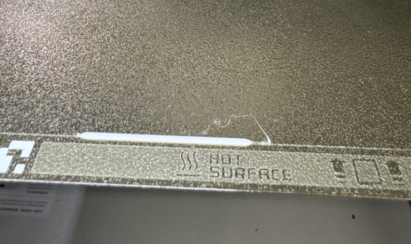
냉각팬은 두 군데 있습니다. 노즐에 달린 것은 냉각의 핵심이라 설정값을 건드리지 말아주세요. 나머지 하나는 오른쪽 측면에서 프린터 내부로 공기를 불어넣습니다.
두꺼운 출력물은 수축이 생길 수 있습니다. 모서리가 말려 올라가거나 층이 튀어나오는 식이에요. 이럴 땐 브림을 넣어보시고, 냉각팬이 원인일 수도 있습니다.
잘 나온 출력물은 사진 찍어서 단톡방에 올려주세요. 다른 사람들이 뭘 만들 수 있는지 알게 되고, 보는 재미도 있습니다.
모두 돌구름 프린터에서 실제로 있었던 일입니다.
여러 플레이트로 나뉜 모델을 임의로 한 플레이트에 모으고, 멀티컬러를 레이어별로 설정해서 출력했습니다. 퍼지로 필라멘트가 대량으로 버려졌고 결국 베드 안착에 실패했습니다. 안착을 확인하지 않고 자리를 떴고 실패 사실도 알리지 않아서, 스파게티 감지 경고가 뜬 채로 베드가 가열된 상태로 며칠간 방치됐습니다.
교체 방법을 모르는 상태로 시도해서 로드·퍼지·언로드를 반복했습니다. 한 시간 넘게 씨름하다가 겨우 출력을 시작했고 필라멘트만 낭비됐습니다.
증상을 확인하려고 당분간 특수 필라멘트를 쓰지 말라고 공지했는데도 사용했습니다. 게다가 옆면 표기를 보지 않고 특수 필라멘트를 일반 PLA로 설정해서 출력했습니다.
분해하거나 임의로 조작하지 마시고 바로 연락주시면 됩니다. 상태를 그대로 두는 게 원인 파악에 제일 도움이 돼요.
돌구름에는 장비를 봐주는 담당 인력이 따로 없습니다. 고장 나면 관리자가 혼자 고쳐야 하고, 그동안 동아리원 전체가 프린터를 못 씁니다. 수칙을 지켜서 쓰는 게 결국 본인한테 돌아옵니다.
설정값이 헷갈리거나 처음 해보는 작업이라면, 시작하기 전에 물어보시는 편이 훨씬 빠릅니다.